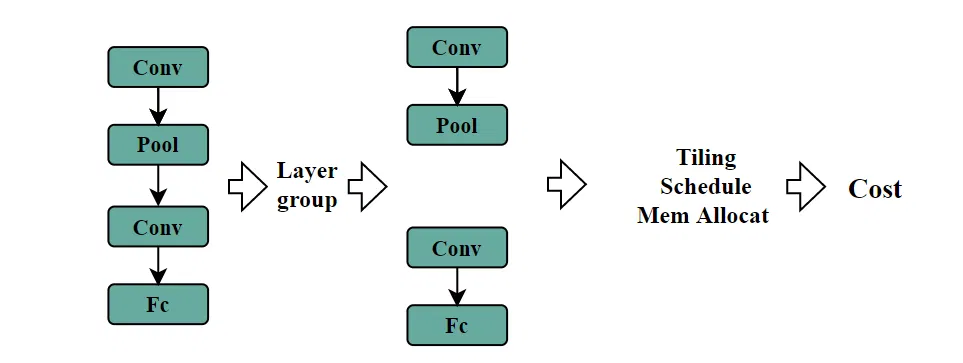
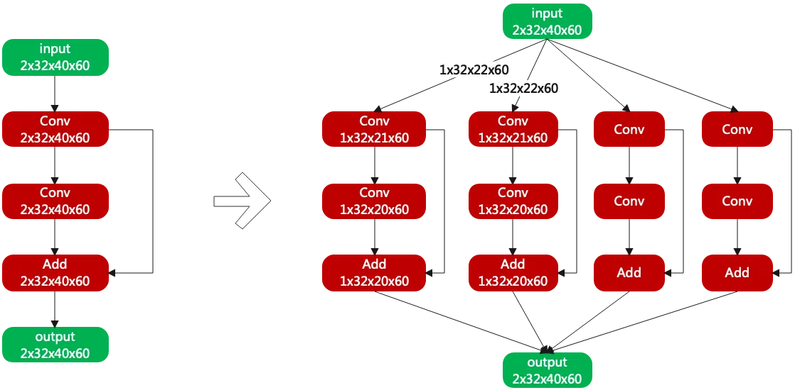
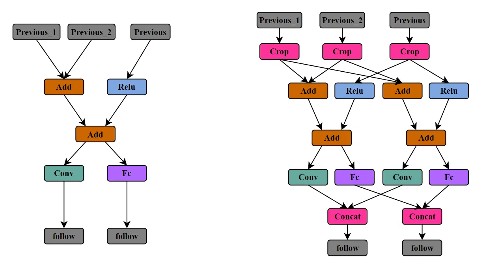
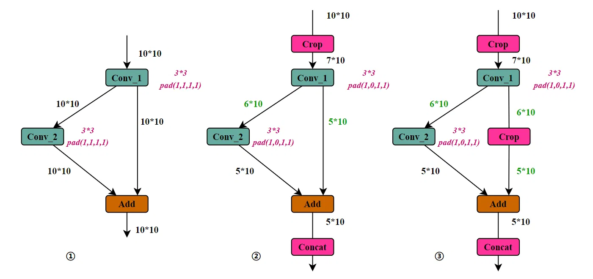
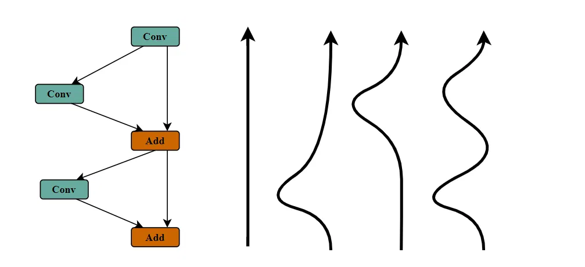

# 前言
本篇讲解笔者实现 tiling 算法的一些经验。
前述文章 《如何进行 layer-group》讲解了 layer group 的内容。《Tiling 操作能优化哪些时间》提到 Tiling 的概念和作用。感兴趣的话可以阅读。
本篇文章参考过 《超强干货！地平线编译器大牛的编译优化实践总结》，《Arm 周易编译器工程》，《算能 TPU layer group 讲解》，《算能 TPU 视频讲解》 等文章和工程，欢迎大家参考。
作为初学者，错误在所难免，还望不吝赐教。
# 回顾

如图所示，AI 编译优化的基本流程是 1. 图优化 (算子融合，常量折叠等) 2. 拆分 (layer group 和 tiling) 3. 并行和调度。最后得到当前编译的时间消耗。
# 分支结构 Tiling

假设现在对某个 layer group 做 tiling，需要对当前这个 layer group 按照 tiling 块数构建平行分支。
上图来自《算能 TPU layer group 讲解》。如图所示，含有三个卷积算子的 layer group ，将其 tiling 成四块，则 group 的图结构变成右边的形状，图上也表明了 tiling 之后 tensor 的大小。可以使用 crop 算子完成 tensor 的切分，使用 concat 算子实现 tensor 的合并。图中没有画出 crop 算子和 concat 算子。
神经网络结构复杂多样，分支结构、多前序节点、多后续节点等给 tiling 的实际操作带来很大困难。根据前述的 layer group 动态搜索划分，我们可能需要在各种各样的结构上进行 tiling 操作。下图是一种较为复杂的分支结构在 tiling 前后的对比图，可以给 tiling 结构的创建带来更直观的感受。

这是一个虚构的、较为复杂的分支结构。中间彩色的五个节点是当前要做 tiling 的 layer group，而上方和下方是当前 layer group 的前序节点和后续节点。
为方便，只 tiling 成两块。
tiling 后的结构如图右侧所示，原有彩色算子部分复制成两份；layer group 有几个输出端（当前 group 有两个输出端：Conv 和 Fc）就有几个 concat 节点。layer group 的输入端（Add 节点和 Relu 节点）前面要添加 crop 节点，当输入端有多个前序节点时（Add 有两个前序节点），每个都要添加 crop。
大致的结构重建就是这个样子。在实际操作中可能还有些不同，例如为保持所有节点都只能有一个输出 tensor 的原则，Crop 节点不能输出两个 tensor。
# Tiling 维度
现有方案基本都选择在 N H W，也就是批次、高度、宽度这三个维度上做 tiling。
N（批次）方向分块是最简单的方案，可以随意划分，对整个网络的运行没有影响。但是也许模型在推理的时候批次只有 1，无法 tiling。所以批次方向不是在所有情况下都适用。
高度和宽度方向 tiling，比批次方向稍复杂，需要重新 infer shape 和调整参数（下一节讲解），但好在原有的算子推理仍然适用。
基本上不考虑 C（通道）方向 tiling。通道方向分块，不仅要调整权重偏置 tensor，还需要在算子运算后加减 tensor，破坏了原有算子推理。
现有方案基本支持批次、高度、宽度这三个维度上做 tiling。
# Tiling 逆向推理
上面只完成了 layer group 在 tiling 之后的结构重建。想要实现模型的正确推理，还需要更新好多信息。
# 逆向 shape 推理
推理 shape，在 tensor 分块后，维度大小自然需要更新。下图是一个简单的分支结构的 tensor shape 推理例子。

图①是推理之前的网络结构，仅包含两个卷积算子（均为 3*3，pad=1）。图上已经标明了每个算子的输入输出 tensor 的大小。现在将此 group 从 H（高）维度 tiling 成两份，也就是输出端（Add 节点）的输出 tensor 设置为 5*10。
从输出端（Add 节点）开始逆序推导各个算子的输入输出 shape。如图②，普通算子如 Add，输入 tensor 的 shape 于输出 tensor 相同。而 Conv 这样的算子，需要根据参数、所在位置、输出 shape 来计算输入 tensor 的 shape。例如图②中 Conv_2 的输入变成 [6,10]，参数中 pad 需要修改为 [1,0,1,1]。
现在出现一个问题：从 Add 节点直接往前推，Conv_1 的输出应该是 [5,10]，而走 Add->Conv_2 路径，Conv_1 的输出应该是 [6,10]。Conv_1 不可能同时输出 [6,10] 和 [5,10] 两个 tensor。如何处理当前的歧义呢？
也许增加一个 crop 节点是个可选的方法。如图③所示，增加一个新的 Crop 节点，将 Conv_1 的输出 tensor 从 [6,10] 变成 [5,10]。
# 逆向深度优先搜索
从逆向 shape 推理过程的分析来看，更新 layer group 的 shape，需要从输出端开始，逆向深度优先搜索每个分支，更新 shape 信息，还得判断采用哪些信息（如上一节中 Conv_1 的输出是 [6,10] 还是 [5,10]）。
逆向深度优先搜索每个分支的意思如下图所示：从输出端搜索到输入端的每一条通路。下图结构中有四条通路。

# 后记
本博客目前以及可预期的将来都不会支持评论功能。各位大侠如若有指教和问题，可以在我的 github 项目 或随便一个项目下提出 issue，或者知乎 私信，并指明哪一篇博客，我看到一定及时回复，感激不尽！